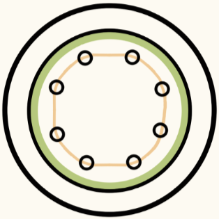
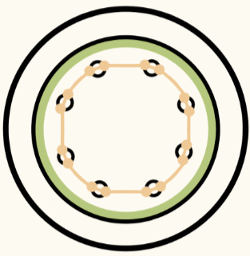
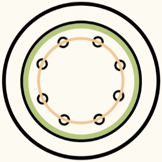

Overview
Using Simpson's Plant Systematics, secondary growth is the "growth in girth or width by means of cells produced from lateral meristems." Two important results of this growth are the vascular cambium and the cork cambium (phellogen). This process occurs in all gymnosperms and dicots. Some monocots, like palm trees, appear to have secondary growth, however, they do not undergo the same process. Therefore, they do not have secondary growth.
Vascular Cambium
Both roots and stems after secondary growth have a vascular cambium. While the end result is the same, the development of the vascular cambium in roots starts differently compared to the development of the vascular cambium in stems.
Rot
oUndifferentiated procambium cells undergo meristematic activity
Pericycle undergoes meristematic activity at the xylary poles
Two sets of meristematic activities join together
Vascular cambium forms
Stem
Fascicular cambium and interfascicular cambium undergo meristematic activity
Two sets of meristematic activities join together
Vascular cambium forms
Cork Cambium
The cork cambium, also known as phellogen, is a circular ring of meristematic cells that yields the periderm. For more information on the periderm, visit the bark page of the site.
Roots and stems are more similar in their exterior anatomy than their interior. Therefore, the cork cambium starts the same in both roots and stems.
Pericycle cells undergo periclinal and anticlinal divisions
As the number of layers increases, the cortex is forced outward until it ruptures and is sloughed off.
The outer part of the pericycle develops into the cork cambium.